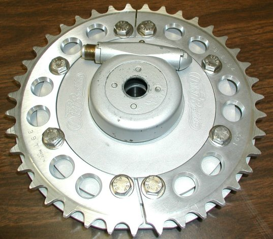
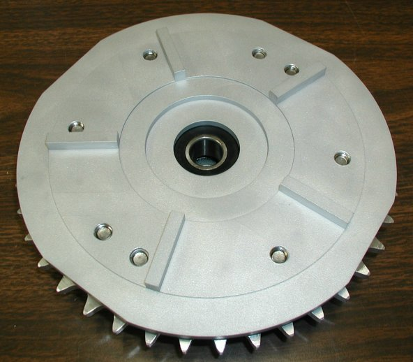
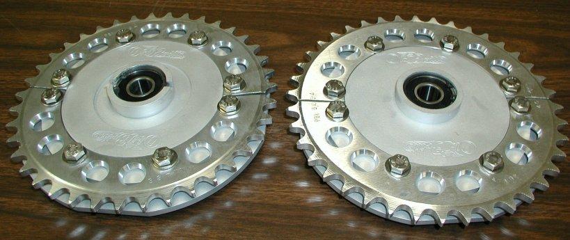
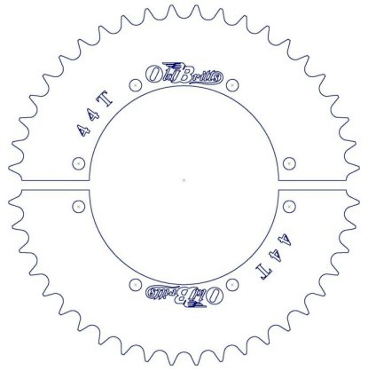

The current prices for our Sprocket Carrier (part # 06-6011/OB) is -
$400.00,
as of
02/12/21.

Having removable rear sprockets allows you to change your gearing by changing the rear sprocket instead of having to remove the complete primary case to change the counter shaft sprocket. Having the sprocket split in half allows you to change the rear sprocket without removing the rear wheel. We have used this type of sprocket carrier on our 1972 750cc race bike for years. Our race bike does have a MK3 rear hub and rear disc brake. The sprockets pictured are purchased as one piece sprockets and have to be cut in half. This carrier will accept a sprocket as low as 35 teeth. We will be building two piece sprockets that mate up without having a gap between the sprocket halves.


The left carrier has a center step so the stock speedometer drive can be mounted. The carrier on the right does not have the speedo step and can be used with electronic speedometers.

When we go into production on the sprockets, we will provide more information and pricing. We are planning on producing sprockets from 35 tooth to at least 44 tooth. We will publish a chart with top speeds for all four gears at 6000rpm for each sprocket we will be producing.
This page was written and designed by F. H. Eaton & Associates if you have any questions or comments please contact us at info@fheaton.com